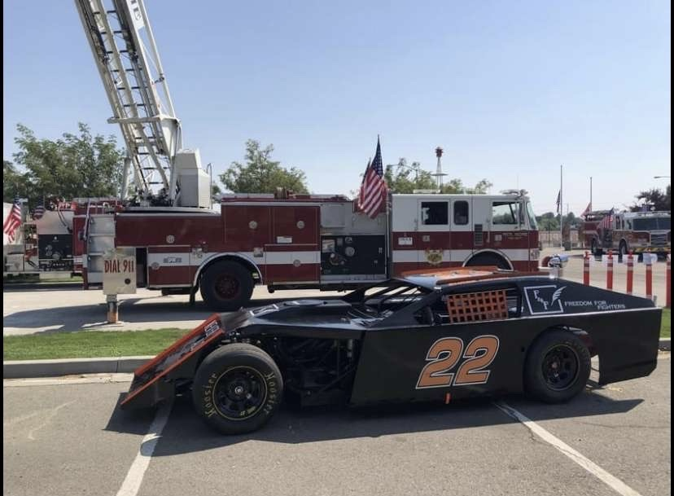
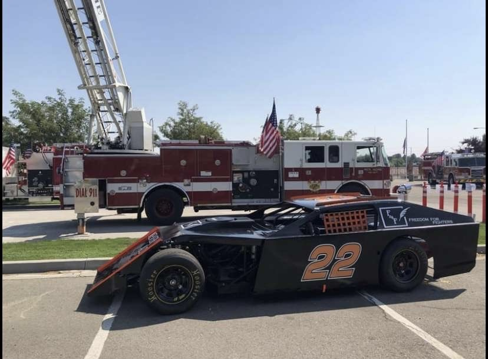
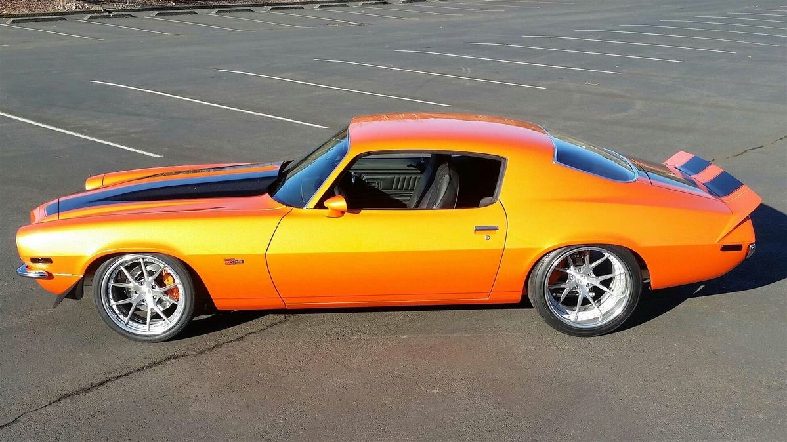
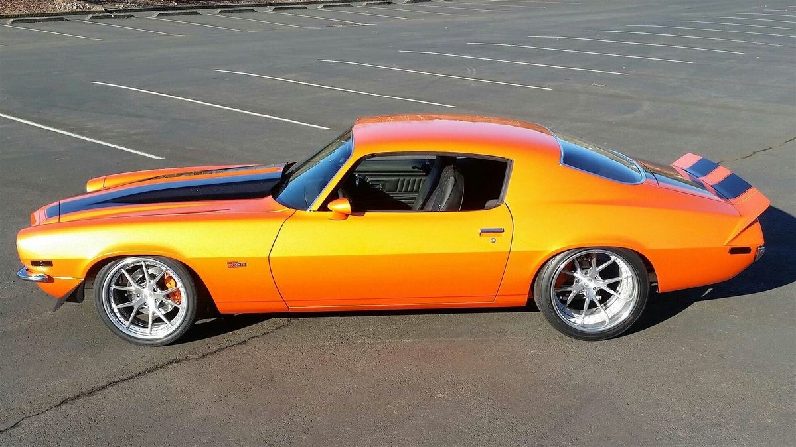
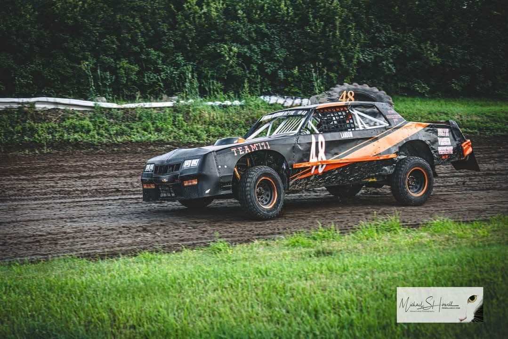
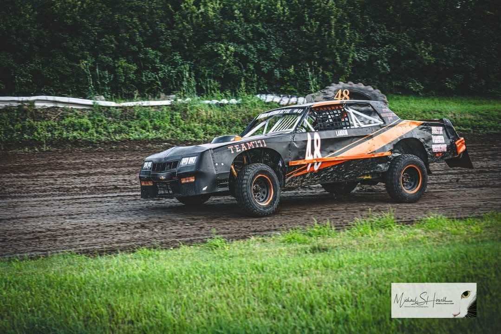

🔧 Our Services 🔧
Street & Asphalt Performance Cars
 

We specialize in naturally aspirated street and asphalt performance builds focused on precision tuning, gear ratio optimization, and advanced suspension setups. We dial in every detail for maximum grip and handling on paved surfaces. Our services include custom suspension geometry, differential gearing, chassis tuning, and dyno-proven engine calibration.
Classic Car Restoration & Performance
 

Bring your classic car back to life with modern performance and reliability. We blend classic aesthetics with updated technology, offering restorations, engine swaps, brake upgrades, and interior conversions while maintaining the classic character of your vehicle.
Off-Road & Dirt Performance Builds
 

Built for short course dirt racing and off-road performance. These builds emphasize durable suspension systems, precise weight distribution, and optimized gearing for dirt track conditions. We specialize in race-ready suspension tuning, roll cage fabrication, differential setups, skid plate protection, and chassis reinforcement designed to handle the extreme demands of dirt stock car racing and off-road competition.
Truck Performance & Upgrades
Transform your truck into a high-performance workhorse. From diesel tuning and turbo upgrades to towing enhancements and suspension lifts, we build trucks that deliver power, capability, and reliability for both work and play.